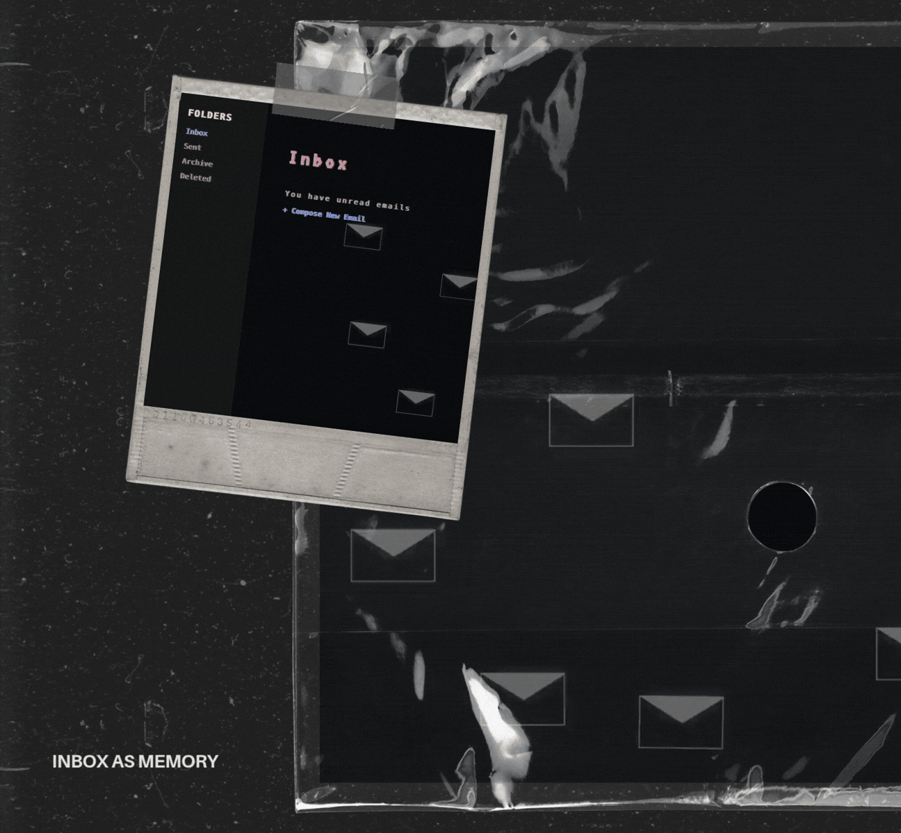

Inbox as Memory
Inbox as Memory reimagines emails as a space for retained thought. Each folder carries its own animation. It turns the mundane rhythm of emails into sifting through memories of opening, holding, and letting go.
Launch site →
The Accumulation
The Accumulation transforms scrolling into an act of accumulation. Beginning at zero, the counter and visual debris increase with every pixel you scroll downward. The piece translates the staggering statistics of ocean plastic pollution into a visual experience.
Launch site →
Something Missing
Something Missing follows the search for a missing recipe ingredient through six memories. Each memory is close, but not quite right. The piece ends on the realization that the missing part was never a specific ingredient, but the permission to let an faded memory evolve into something of your own.
Launch site →